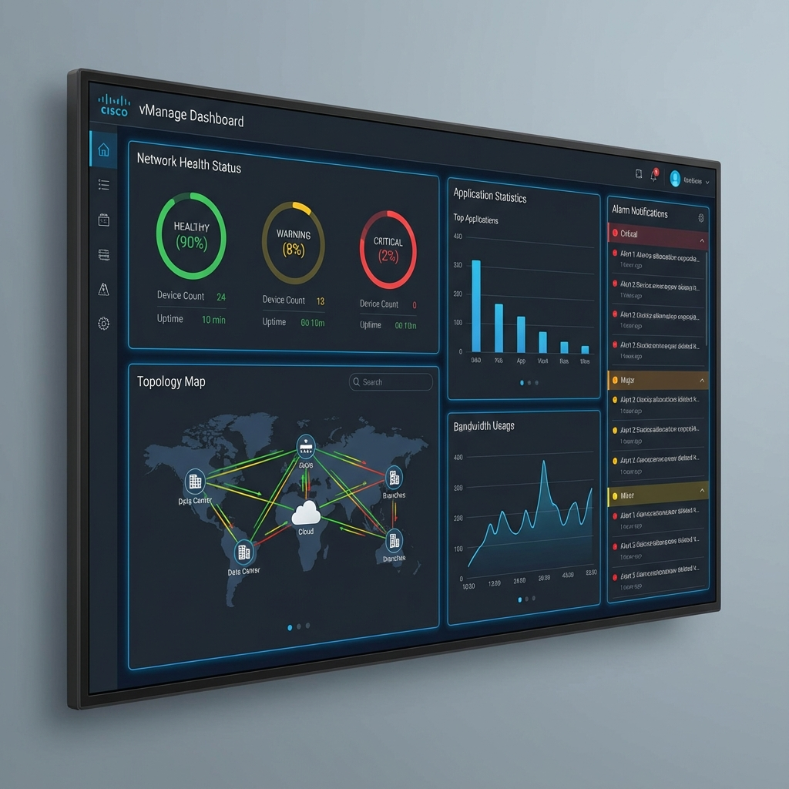

Chapter 14
Cisco Catalyst SD-WAN Monitoring and Operations
Learning Objectives
- Memahami vManage monitoring dashboard
- Mengkonfigurasi alerts dan notifications
- Menggunakan troubleshooting tools
- Melakukan software upgrades dan maintenance

Gambar 14.1 - vManage Dashboard untuk monitoring dan visibility jaringan SD-WAN
vManage Dashboard
vManage menyediakan real-time visibility ke seluruh SD-WAN fabric.
Network Health
Overall fabric status dan trends
Topology View
Visual network topology
App Statistics
Application usage analytics
Alarms
Critical events dan alerts
Key Metrics:
| Metric | Description | Concern Level |
|---|---|---|
| Control Connections | OMP sessions to vSmart | Critical if down |
| BFD Sessions | Data plane tunnel health | High if degraded |
| Certificate Status | Validity dan expiry | Critical if expired |
| CPU/Memory | Resource utilization | Medium if high |
Alerts and Notifications
Alert Types:
- Critical: Immediate attention required
- Major: Significant issue affecting service
- Minor: Degradation or warning
- Warning: Potential issue detected
Notification Methods:
- Email notifications
- Syslog integration
- SNMP traps
- Webhooks untuk external systems
Best Practice
Configure tiered notification escalation untuk different severity levels.
Troubleshooting Tools
Built-in Tools:
🔍 Real-Time Device Data
- Interface statistics
- Tunnel status
- OMP routes
- BFD sessions
📊 App Route Statistics
- Path latency/loss/jitter
- Application flows
- DPI statistics
🛠️ Diagnostic Tools
- Ping dan Traceroute
- Speed test
- Packet capture
- Debug logs
Software Upgrades
Upgrade Best Practices:
- Staging: Test upgrades di lab environment terlebih dahulu
- Backup: Backup configuration sebelum upgrade
- Rolling: Upgrade satu device pada satu waktu
- Validation: Verify control dan data plane setelah upgrade
Upgrade Order:
| Order | Component | Notes |
|---|---|---|
| 1 | vManage | Upgrade controllers first |
| 2 | vBond | One at a time |
| 3 | vSmart | Maintain HA during upgrade |
| 4 | Edge Devices | Rolling upgrade by site |
Version Compatibility
Always check release notes untuk compatibility matrix antara controllers dan edge devices.